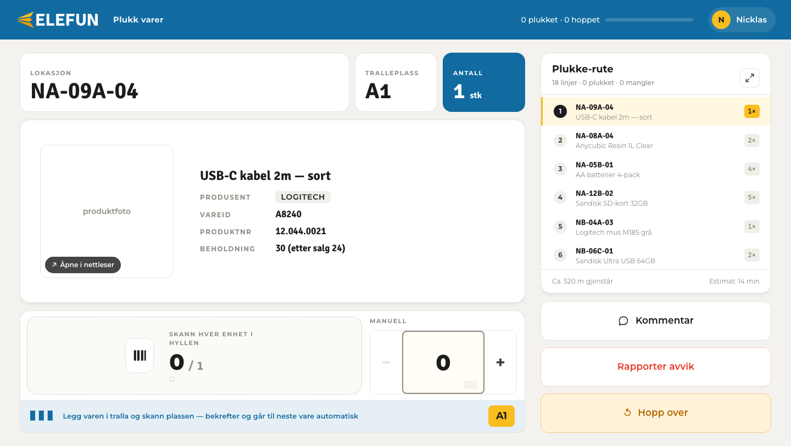
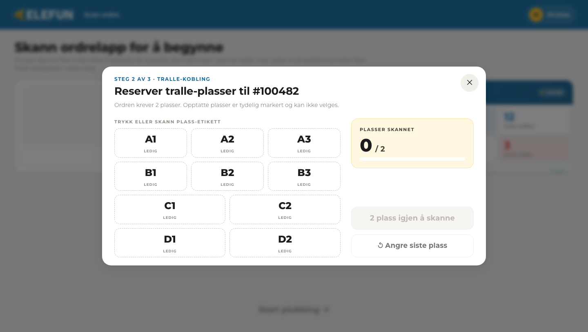
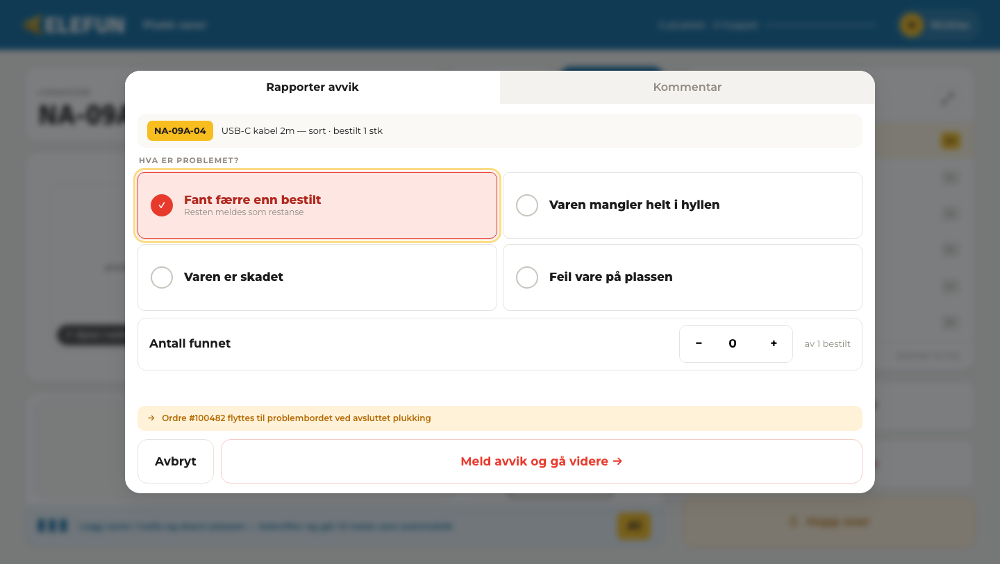

Siden første status
I Status 1 beskrev jeg oppstarten, arbeidet med plukkeflyten og lagring av en aktiv plukkeøkt. Etter dette har jeg jobbet videre med frontend i PlukkeFun, blant annet på bakgrunn av tilbakemeldinger fra Elefun.
Arbeidsoppgavene mine
Jeg har justert plukkeskjermen slik at produktinformasjon, lokasjon, tralleplass og antall er lettere å lese mens man arbeider. Jeg har også gjort overgangen mellom skanning av varer og bekreftelse av tralleplass enklere å følge.
En annen oppgave har vært å forbedre håndteringen av avvik og kommentarer. Et registrert avvik eller en kommentar kan nå åpnes igjen med de tidligere opplysningene på plass, slik at brukeren kan rette dem. Jeg har dessuten sperret fjerning av en ordre når varer allerede er telt. Sperren ligger både i grensesnittet og i logikken for plukkeøkten.
Utfordringer og erfaringer
Det mest krevende i denne fasen har vært å få det brukeren ser til å stemme med tilstanden i en aktiv plukkeøkt. Når noen endrer et avvik midt i arbeidet, må de gamle verdiene vises riktig og lagres uten at annen informasjon går tapt. På samme måte må en påbegynt ordre beskyttes selv om en handling skulle bli utløst på en annen måte enn gjennom knappen på skjermen.
Tilbakemeldingene fra Elefun har gjort det lettere å vurdere løsningene opp mot den faktiske arbeidssituasjonen. I et lager må informasjon kunne oppfattes raskt, og handlingene bør fungere med skanner og store treffområder. Det har vært spennende å se hvor mye små justeringer i flyten betyr.
Hvor prosjektet står nå
Den åpne PlukkeFun-versjonen kan brukes til å demonstrere arbeidsflyten, men den er fortsatt en prototype. Ordre, varer, bruker og tralle er testdata. Autentisering og koblingene til Elefuns faktiske ordre- og lagersystem er ikke ferdige. Videre arbeid er å teste flyten grundigere med brukerne og erstatte testdata og midlertidige løsninger med reelle integrasjoner.
Skjermbilder og skjermopptak
Bildene og videoen er fra PlukkeFun-demoen 14. oktober 2026. Navn og tall er testdata.


